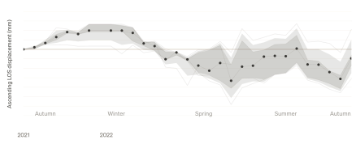
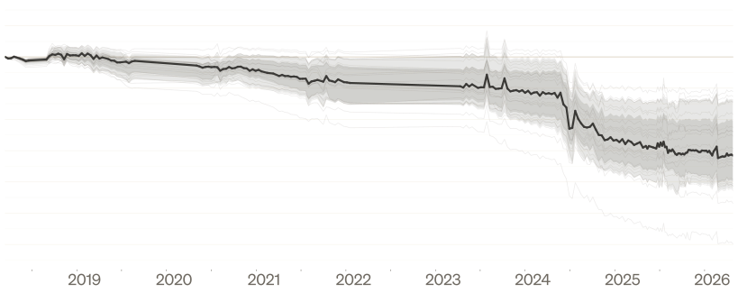

This demo follows a satellite-data pipeline from acquisition through data wrangling to line-of-sight displacement time-series visualization. A supplementary glacier-outline extract from the open-source Randolph Glacier Inventory provides spatial context for interpreting the observations.
My contribution
Workflow demonstration and visual interpretation
Processing direction
Interferograms → Displacement time series → Interpretation
Finding shown
Ascending observation geometry · 2021–2022
The question
What can a short radar observation record reveal about movement within a glacier outline? The study
connects glacier inventories with an interferometric time-series workflow, then examines how the
displayed line-of-sight signal varies through the year.

Exploratory finding / 2021–2022
The supplied ascending LOS series rises into winter, drops through spring, then partly recovers in
summer before declining again toward autumn. This describes the plotted pattern; it does not
establish a seasonal mechanism. The figure labels displacement in millimetres but has no readable
numerical y-axis ticks, so no displacement magnitude or rate is reported here.
The workflow
01 / Acquire
Assemble radar inputs
Identify the glacier and observation period, then obtain interferogram products through the
Alaska Satellite Facility.
02 / Process
Build a time series
Prepare the interferogram stack and supporting geometry for MintPy. Its time-series workflow
links interferometric observations to displacement along the radar line of sight.
03 / Interpret
Survey glacier movement
Relate the time series to glacier outlines and inspect temporal variation. Reference choices,
coherence, unwrapping and observation geometry remain essential to interpreting that signal.

Earlier dossier / Context graphic
The earlier dossier graphic is retained as the project preview. Its source filename identifies a
borrowed time series, and its longer date range differs from the 2021–2022 finding above. It is
contextual material, not evidence that the workflow produced this longer record.